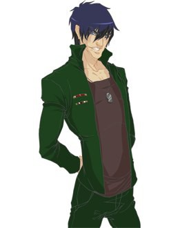

Жуков

Портретная галерея:
Георгий Жуков, Сергей Королев, Сергей Киров, Валерий Чкалов, Оливер Кромвель, Борис Ельцин, Александр
Лебедь, Лев Гумилев, Рихард Вагнер, Михаил Ульянов, Кирилл Лавров, Лев Дуров, Алексей Булдаков, Жорж Санд, Анна
Ахматова, Марина Цветаева, Александра Коллонтай, Айседора Дункан, Нонна Мордюкова, Алиса Фрейндлих, Джейн Фонда.
Квадральные признаки:
бетта-квадра; веселый, решительный, аристократ.
Диадные признаки:
иррациональный (циклотим), уступчивый, предусмотрительный, коллективист.
Индивидуальные признаки:
экстраверт, статик, деклатим, негативист, сенсорик, логик, стратег, конструктивный.
Первая функция - уровень организации личности, или принцип существования. Зона уверенности. "Хорошо"
объектная сенсорика - форма, действие, движение, поступок, внешность, жесты и мимика. Воля. Мое умение,
сила, влияние, деньги, имидж
принцип существования: "Действую, следовательно, существую". Стабильность внешней формы, уверенность в
своей внешности, в своих поступках. Чьи-то сомнения в его действиях могут вызвать агрессию. Определение "трудоголик"
относится к нему в полной мере. Это человек, который не может без дела, какое-то движение вокруг него обязательно
должно происходить. Часто это проявляется в бурной активности, даже независимо от того, насколько необходимой
является конкретная деятельность. Например, в дружеской компании: что такое Жуков, который молчит 10 минут? Кто
такого Жукова видел? Или немой, или заболел, или помер…
Жуков отдается делу полностью, никогда не экономя свои силы. Это властный, волевой тип, умеющий подчинять
других своей воле, способный и сам подчиняться, работая в жестких структурах. Привычка брать на себя ответственность
делает его незаменимым руководителем среднего звена - до высшего они все-таки, как правило, не дотягивают из-за
излишней прямолинейности. Но обратите внимание, они, как и Дон Кихоты (Уинстон Черчилль и Маргарет Тэтчер), в
экстремальные периоды истории выдвигаются вперед.
Жукову можно доверять, на него можно положиться. Если вдруг нет движения, нет действия, он обязательно его
находит, как бы притягивая к себе ситуацию, где он нужен, востребован. Эти люди представляют собой довольно сильный
социальный тип.
Два Жукова, как и два Наполеона, на одной территории уживаются плохо. Это вполне естественно, поскольку у
обоих типов ярко выражены лидерские тенденции. Относительно бесконфликтными могут быть только жесткие
иерархические отношения или вариант отношений "учитель–ученик".
Минус-первая функция. Зона игнорирования. Минус-ценности. "Плохо"
субъектная сенсорика
зона игнорирования - здоровье. Жуков проявляет в этом месте то, что называется крестьянским подходом: пашу,
пока в борозду не лягу. Когда уже лег, тогда все - лечите меня! Отправить его в дом отдыха или санаторий полечиться
можно только тогда, когда он физически уже не может работать, что называется "сгорел на работе". Людям данного типа
обязательно нужно об этом помнить, потому что здоровье не бесконечно. Однако совсем оставаться без работы им тоже
никак нельзя. Жукову необходимо научиться осознанно регулировать эти моменты. Получается, однако, далеко не у всех.
В еде Жуков не слишком разборчив: пища должна быть обильной и сытной, без особых изысков. Однако, подано
должно быть красиво.
Вторая функция. Творческая. Уровень функционирования. Зона риска. "Надо"
субъектная логика - моя собственная логика, мое понимание, объяснение, описание, концепция, теория.
Иерархия представлений о том, что ближе, что дальше, что выше, что ниже. Моя картина мира, мое мировоззрение. Мое
образование, т. е. система моих образов, моя школа
творческое место - чувство диалектики, возможность рассмотреть объект, ситуацию, событие с одной и с другой
стороны, объяснить какое-то явление с разных позиций. У Жукова здесь консерватизма нет.
Дон Кихот - генератор идей, однако он сам никогда не доводит свои идеи до воплощения. Жуков, имея ту же
творческую функцию, воплощает свои идеи, т. е. у Жукова это все происходит в реальном времени. Например, Королев
(Жуков) и Циолковский (Дон Кихот) - у них обоих была идея о полете человека в космос. Королев осуществил совершенно
немыслимый проект в совершенно фантастических, нечеловеческих условиях и был по-своему счастлив.
Минус-вторая функция. Зона нормативов, эталонов, стереотипов поведения. "Не надо"
объектная логика - логика объективного мира, объективные обстоятельства, факты. Методики, статистика.
Реальная связь событий. Моя территория
зона нормативов - логика внешнего мира. У людей этого типа имеется определенный набор само собой
разумеющихся норм, которые безоговорочно, абсолютно не творчески исполняются. Жуков здесь не тратит времени на
принятие решений.
Третья функция. Принцип самооценки. Место наименьшего сопротивления. "Проблемы"
объектная этика - Внешние отношения. Отношения людей между собой и отношение людей ко мне. Эмоции других
людей
принцип самооценки для Жукова: "Я нужен людям, значит, я хороший". Оценка со стороны других людей - повод
для хорошего или плохого отношения к себе. Это ведь очень интересно: когда, в каких ситуациях человек получает плюс
по третьей функции. Если Жуков востребован, он получает постоянную прибавку энергии. Внешние отношения направлены
как раз на меня, я нужен. И не случайно именно у этих двух типов (Дон Кихот и Жуков) наиболее ярко выражено
совпадение личных и общественных интересов. Недобросовестные "друзья" часто используют эту особенность характера
Жукова в своих интересах.
Жуков обязательно должен быть нужен, иначе он уходит в болезнь, а всю свою колоссальную энергию начинает
тратить на лечение, серьезно усугубляя ситуацию.
Минус-третья функция. Зона решения проблем
субъектная этика - Мое отношение к людям. Люблю кого-то или что-то - не люблю, нравится - не нравится. Мои
эмоции
решение проблем заключается в изменении собственного отношения к объекту или человеку. Самое главное, чтобы
в этом месте была определенность, ясность. Дон Кихот, сталкиваясь с проблемой во внешних отношениях, старается
как-то сгладить ситуацию. Жуков в этом месте действует гораздо решительнее. Для него легче отодвинуть подальше,
убрать из своей жизни человека, с которым испортились отношения, чем терпеть ситуацию неопределенности. Оба вида
реакции неадекватны, однако цель достигнута: ситуация упрощается в обоих случаях, проблема исчезает. В случае Жукова
это кардинальный способ решения: нет отношений, нет проблемы.
Четвертая функция. Суггестивная. Принцип оценки места. Мотивы. "Хочу"
субъектная интуиция - целостность внутренней ситуации. Внутренняя гармония. Состояние, настроение, чувство
времени
"Хочу, чтобы было все гармонично и красиво. Сделайте что-нибудь так, чтобы мне было хорошо". Жуков ощущает
острую необходимость внутренней гармонии, но сам не справляется со своим настроением. Для того чтобы переключить
состояние, ему нужно какое-то внешнее воздействие. Поэтому здесь существует опасность использования стандартных
средств изменения настроения - алкоголя, наркотиков. Кому-то помогает скандал. Это очень интересное место суггестии,
потому что эти люди занимают, как правило, места руководителей, и с ними часто приходится вступать во
взаимодействие. Сложность таких контактов в том, что человек, которому трудно управлять своим внутренним состоянием,
настроением, плохо предсказуем.
Минус-четвертая функция. Зона страхов. "Не хочу"
объектная интуиция - целостность внешней ситуации. Последовательность событий от начала до конца, ряды
событий, расписание. Потенциальные возможности. Программа поведения, уклад, ритм жизни. Сценарий какого-либо
действия, партитура
страх целостности внешней ситуации. Целостность внешней ситуации подсознательно отвергается. Что делать,
если все известно от начала до конца? У Жукова это скорее связано со временем. "Как это распорядок? А если я захочу
работать 24 часа в сутки? Что это вы мне выстроили рабочий график? Не знаю никакого рабочего дня. Хочу и работаю".
Неслучайно талант самого маршала Жукова наиболее ярко проявлялся в ситуациях, где резко менялся ход событий, в
ситуациях прорыва, наступления, там, где необходимы неожиданные решения, выход из обыденного графика, резкие
изменения всей внешней ситуации. Жуков может одновременно контролировать, а соответственно и присутствовать в
нескольких ситуациях сразу, постоянно переключаясь.